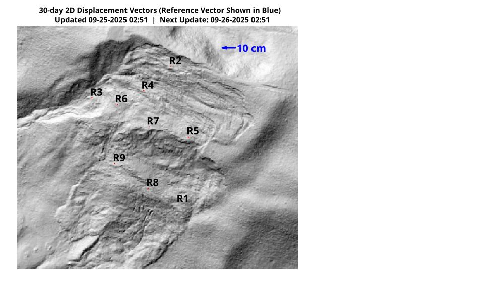
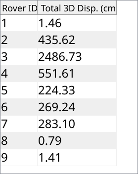

30-Day 2D displacement vectors. Reference vector length shown in blue.
Note: Minimal displacements (i.e., less than 1cm) may produce inaccurate trajectories due to GNSS noise. All locations are approximate.

Cumulative 3D displacement of RTK-GNSS rovers over the past 30 days.
Note: Positional accuracies are generally on the order of 1 cm. Small fluctuations in cumulative displacement may occur due to GNSS noise.

Rovers 1 and 2 installed on August 24, 2023.
Rovers 3 and 4 installed on November 03, 2023.
Rovers 5 and 6 installed on April 5, 2024.
Rover 7 Installed on September 9, 2024.
Rovers 8 and 9 installed on September 20, 2024.